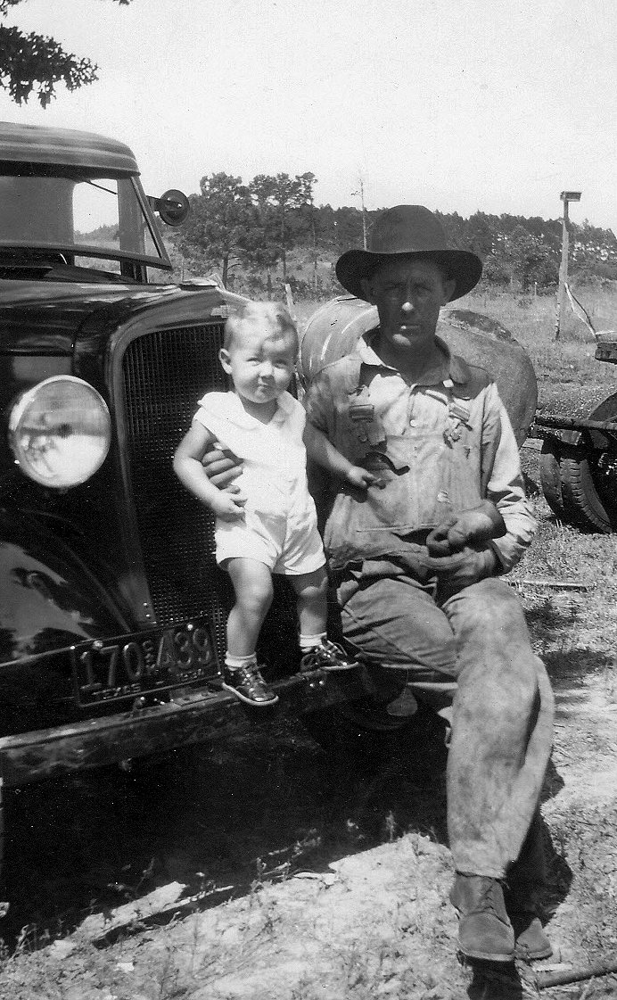
The Story of the Whitaker Family of Minden, Texas
It was a sunny, pleasant autumn day in the mid-70s when I stood in the yard watching my dad head out for a day’s work. In the background of our family photo, just on the right, you can still see the back tire of his log trailer and the heavy rear pole holding the timber in place.
My father, Richard Bailey Whitaker—known to everyone around Rusk County as RB—was an independent truck driver. Back in the early 1930s, our corner of East Texas ran on timber, and sawmills were the heartbeat of the local economy. RB hauled logs out of the pine stands to keep those mills running.
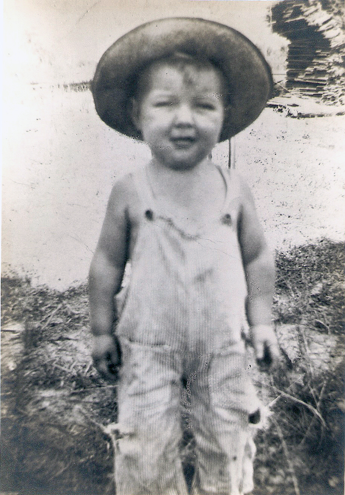
I’m Richard Leathel Whitaker, though my family has always called me Wee Wee. In those early years, I was living on our rural farm near Minden with my older sisters, Ora Devera (Vera, age 9) and Edwin Louise (age 6), my older brother AJ (age 4), and our mother, Lena Mae Haden Whitaker.
Life on the homestead moved by the sun, not the clock. Long before dawn, the kitchen sat chilled and dark, save for the faint tick of a windup clock. Nine out of ten rural American homes had no electricity back then, which meant every bit of light, heat, and cooked food began at the wood stove.
Mom was almost always the first awake. Her hands knew the iron poker, the damper lever, and the heavy stove lid by touch. She would carefully sweep away the gray ash from the night before, stack splinters of dry hickory or oak over the surviving red coals, and coax the morning fire to life. Too hot and precious firewood was wasted; too cool and breakfast would be late. As Vera and Edwin Louise grew older, they stood beside Mom in the dim kitchen, learning how to manage the draft and keep the belly of the stove radiating steady warmth.
Once the stove was lit, the outdoor work began. My sisters’ morning chore was walking down the muddy path to the springhouse to haul the day’s water. Carrying two two-gallon pales at a time, arms straining and fingers chilled by metal handles, it took 15 to 20 trips to bring back the 30 to 40 gallons our family of six needed for cooking, drinking, and stock. On Mondays, when wash day arrived, filling the copper laundry boiler demanded another 20 buckets and devoured 30 to 60 pounds of firewood just to reach a boil.
With water hauled, we turned to the animals. Milking the cow took about nine minutes, followed by another nine gathering morning eggs. Meals were simple and sturdy—beans, potatoes, bread, oats, and cornmeal, with salted or cured meats and root-cellar vegetables that stayed fresh without refrigeration.
Our springhouse served as our refrigerator. We set crocks of fresh raw milk directly into the cold spring water for a few days until a thick cream line rose to the top. Skimming that cream, letting it age at room temperature, and churning it into butter was one of my favorite chores—mostly because I got to drink the cold, tangy buttermilk left behind after we strained and pressed the butter fat solids into wooden molds.
Our family grew even closer on June 1, 1934, when Mom gave birth to another sister, Betty Elaine Whitaker. Because I was still young and the older kids and Mom were busy tending to the heavy household and farm chores, looking after little Betty became my special duty. We were thick as thieves from the very start, playing together around the yard and keeping each other company while the farm hummed with work.
Outside our farm, our community of Minden carried a rich history. Originally settled a mile east in 1849 by the Lewis family from Georgia, it was named by H.W. Watson after his hometown in Louisiana. The town moved to its present site in the 1880s, growing around cotton gins, sawmills, and gristmills.
Minden’s pride was its school. Founded in 1880 by Professor G.I. Watkins on a four-acre plot donated by Mr. and Mrs. Paul Rettig, the Rock Hill Institute sat atop the prominent landmark that gave it its name. It was one of the last pioneer academies in East Texas, offering tuition-free education to local children. In 1919, it became part of the Minden Independent School District. Both of my older sisters attended Rock Hill, and it wasn't long before AJ, Betty, and I were walking up that hill to join them.
Outside our small town, the Great Depression was reshaping Texas. Franklin D. Roosevelt took office in 1933 with overwhelming support from Texans, introducing New Deal programs that brought unprecedented federal investment to the state. The New Deal elevated figures like Lyndon B. Johnson—who got his start administering youth programs before bringing power to the Hill Country—and laid the groundwork for massive public works that would soon reach our doorstep in Rusk County.
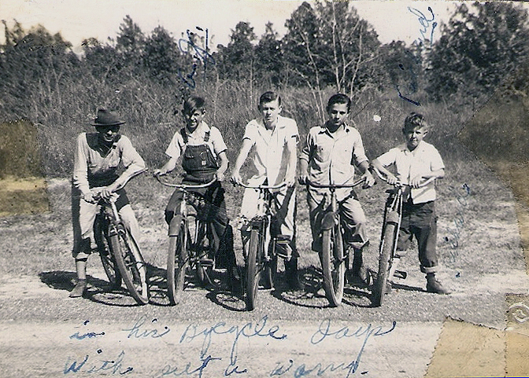
By 1938, I was six years old and spent every afternoon after school riding back roads with my friends. In the photo, that’s me on the far right, with my trousers rolled up. We rode solid, single-gear balloon-tire bikes that could tackle rutted dirt and thick mud, building real leg strength on the long gravel climbs.
Big changes were happening under the oak tree in our yard. RB was a big, patient man—fiercely smart, a great negotiator, and wonderful with us kids. He had a natural knack for figuring out how things worked and making them run.
While he had spent years hauling timber, log hauling was cutthroat. As new federal programs like the Emergency Relief Appropriation Act of 1935 (which created the Works Progress Administration) and the Federal-Aid Highway Act of 1938 poured money into paving rural "farm-to-market" roads, RB saw an opportunity. He transitioned from sawmills to independent contract hauling, using his truck and trailer to carry crushed stone, gravel, iron ore, topsoil, and fill dirt for road construction.
Becoming an independent contractor with multiple clients meant running a much tighter business. Federal regulations under the Motor Carrier Act of 1935 and state laws like the Texas Load Limit Act of 1931 required strict load limits and formal accounting. Mom (Lena Mae) kept the household grounded with tight budgeting and food preservation, while 13-year-old Vera, who was sharp with numbers, stepped up to manage RB’s financial ledgers and load tickets. Ten-year-old Edwin Louise used her artistic talents to sew, paint, and help Mom prepare meals.
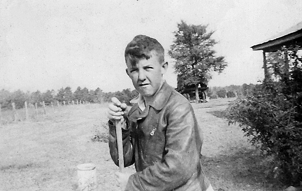
Out in the yard, RB didn't have a formal shop yet. If you looks closely at the picture above right behind me, our shade tree. with a truck backedup to the tree. Maintenance was done under the shade of a large tree, using a heavy chain slung over a thick limb as an engine hoist. Eight-year-old AJ and I were right there beside him every evening. AJ loved getting covered in grease inside the engine compartment, mastering valves, pistons, and carburetors. I loved whittling wood, fixing broken parts, and watching Dad work magic with a cutting torch and stick welder right in the dirt.
Because road building in East Texas dust required heavy soil compaction, factory trucks fell short. Under that shade tree, RB began designing solutions: custom steel water tanks, high-volume pump stations crafted from converted car engines with hand-cast aluminum housings, and 12-volt motorized spray bars that a driver could operate right from inside the cab to cover 30 feet of roadside.
While RB built trucks under the shade tree, the whole community was buzzing about power lines.
By 1935, cities had enjoyed electricity for half a century, but 90% of rural America remained in the dark because private utility companies claimed farm country was too spread out to be profitable. President Roosevelt tackled this by creating the Rural Electrification Administration (REA) in May 1935, led by engineer Morris Cook.
When private utilities refused to cooperate and quoted inflated construction costs of up to $2,000 per mile, Cook’s team standardized materials, used lighter poles and longer spans, and cut line construction costs under $825 per mile. Congress backed the initiative with the Rural Electrification Act of 1936, offering 25-year low-interest loans to non-profit, farmer-owned cooperatives.
In December 1937, local leaders—including Dr. C.A. Dawson of Minden—incorporated the Rusk County Electric Cooperative (RCEC). Organizing wasn't easy; Depression-era families had to collect signatures, pool resources, and pledge their own labor for a technology many had never used, all while private utility companies tried to block co-ops with competing "spite lines."
Once our family signed up as founding members of the RCEC, RB, AJ, and I spent our evenings wiring our home. We ran wiring to ceiling boxes so we’d have light the moment the co-op energized the lines, and installed wall outlets in the living room and kitchen for a radio and appliances. Vera and Edwin Louise made sure to point out exactly where they wanted kitchen outlets placed to help with cooking and domestic work.
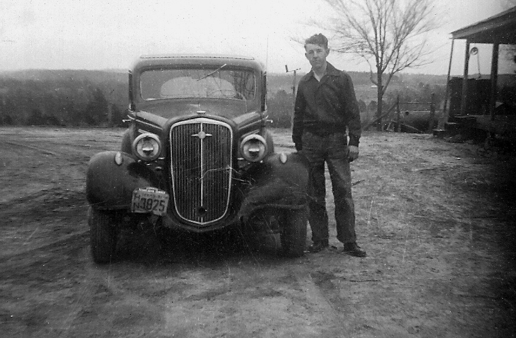
My hands-on mechanical calling called me early. After completing the sixth grade, I left school to join Dad full-time in the trucking business. AJ stayed in school, but he worked right alongside us every evening and weekend.
Together, we grew the business into a four-truck fleet. RB focused on hauling crushed stone, gravel, and iron ore for road construction, while AJ and I operated custom water-hauling trucks fitted with our cab-controlled 12-volt spray bars.
To keep up with the growing business, RB hired John Alfred Firestone, an experienced trucker. John fit right into the family, courted Vera, and they were married in 1950. On January 3, 1948, Vera and John welcomed their son, Leonard Ray Frisbie Firestone. With electricity now running through the home and the trucking business thriving, Vera was able to purchase modern household conveniences, including kitchen appliances and an electric washing machine—a massive leap from the old copper boiler wash days!
Mom and Dad welcomed two more daughters to complete our family: Joyce Whitaker (born 1940), who would later marry Jean Duncan, another one of RB’s trusted truck drivers; and Patricia Whitaker (born 1942).
Now that we had electricity to run a pump, AJ and I tackled our biggest home project yet: hand-digging a water well and installing indoor plumbing. No more carrying two-gallon pales up from the springhouse! Shortly after, AJ earned enough money to buy tin so we could finally construct a proper building, replacing our old shade tree with a real tin shop.
Meanwhile, my sister Edwin Louise faced health challenges from time to time, but she never let them dull her spirit. She worked at Texas State Optical and pursued her passion as a gifted artist. She painted beautiful canvases that would be cherished by AJ and her siblings for the rest of their lives. Tragically, in 1956 at just 28 years old, Edwin Louise passed away following childbirth from "milk leg" (phlegmasia alba dolens), leaving behind a baby daughter. Her passing left a deep wound in our hearts, but her art and memory lived on in our homes.
When the Korean War broke out in June 1950, duty called my brother AJ into service. He joined the U.S. Army Signal Corps, serving on the front lines of military technology.
The Signal Corps was responsible for keeping military units connected under intense conditions. AJ and his fellow soldiers installed and repaired telephone lines, ran field wire through dangerous terrain, operated radios and switchboards, and maintained complex communications equipment. It was a technical support role requiring deep mechanical skill, but it was exceptionally dangerous—often requiring linemen to fix broken wire under enemy fire.
The Signal Corps operated Officer Candidate Schools at Fort Monmouth from 1950 to 1953, graduating over 1,200 officers to lead these high-tech initiatives. AJ’s time under the shade tree working on truck motors back in Minden paid off, giving him the skill and grit needed to keep the Army's communications open during some of the war's toughest battles.
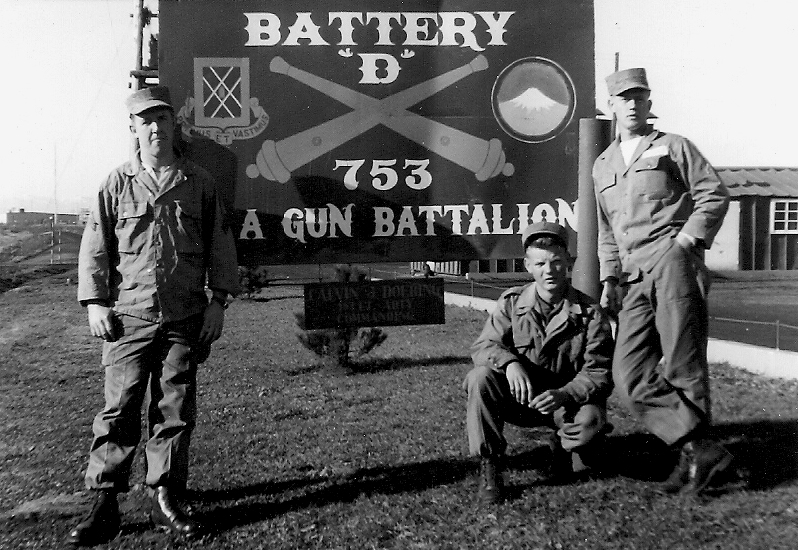
Shortly after AJ deployed, I entered military service during the Korean War era. As fate would have it, our troop ships crossed paths in the Pacific ocean—AJ coming back, and me heading out. We used to joke that we stood on the decks and waved to each other as our ships passed in the night.
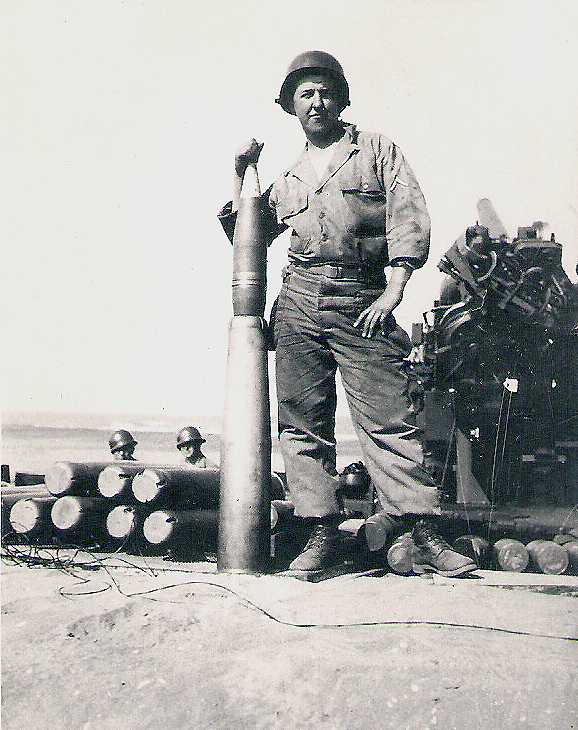
I was assigned to the 753rd Antiaircraft Artillery (AAA) Gun Battalion, stationed in the cold, mountainous terrain of Japan. Our mission was operating heavy 90mm anti-aircraft guns guarding strategic harbors and airbases. (Included in this book is a photograph of me standing proudly beside our 90mm gun holding one of the heavy 90mm artillery shells!).
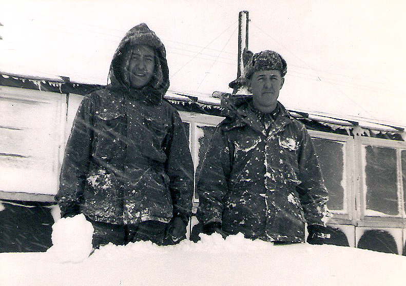
When I first arrived at our mountain barracks, the guys were shivering through cold showers because the heating system was completely broken, and nobody knew how to fix it. Channeling my East Texas shop training, I took the heater apart, repaired the firing mechanism, and got hot water running through the barracks. The guys were so relieved that my commander immediately promoted me to Head Sergeant.
That summer, tired of looking at the overgrown grass around the barracks, I raided the base "bone pile" of scrapped machinery. I salvaged an old engine, welded a frame together, and built a custom power lawnmower out of broken junk. The guys in the barracks loved that mower so much they took over the chore completely—they wouldn't even let me push it! During my off-duty hours, I enjoyed building and flying my own RC (radio-controlled) airplane across the Japanese sky (photo of me and my RC plane).
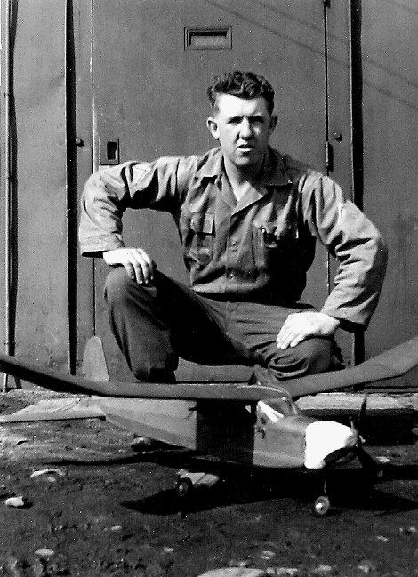
After my honorable discharge, I returned home to East Texas to pick up right where I left off: driving custom water trucks alongside my father, RB. Standing beside those hand-welded red rigs, we continued hauling water and gravel for Texas road construction, continuing the Whitaker family tradition of hard work and mechanical innovation.
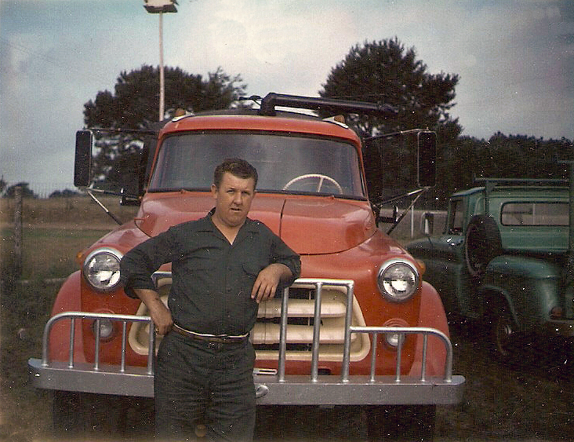
Not long after returning home, I married the love of my life, Jearldean Moore Whitaker. Together, we built a wonderful life, raising three daughters and three sons. I carried the lessons learned under that Minden shade tree through every day of my life, staying active, fixing equipment, and taking care of my family until I passed away on August 3, 2021, after a courageous battle with cancer.
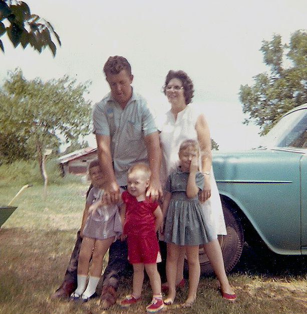
This book stands as a testament for our third generation of children and grandchildren—so they may know where they came from, understand how hard life was back then, and remember the ingenuity, faith, and love that carried the Whitaker family forward.